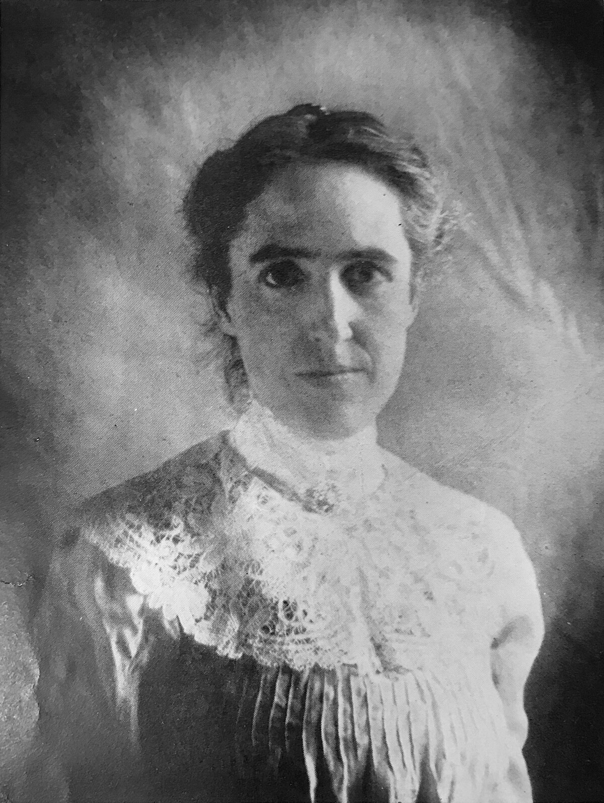
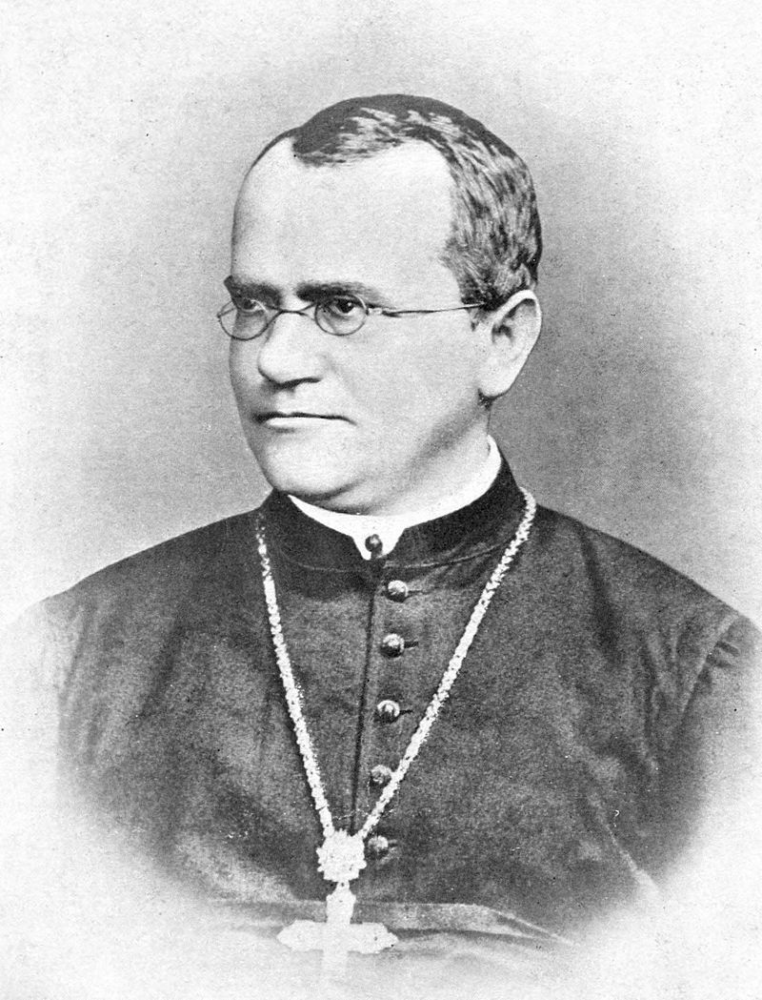
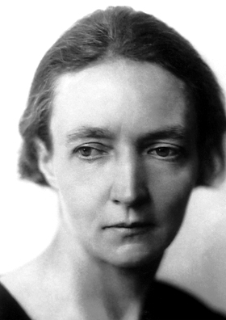

Albert Einstein

Albert Einstein
Albert Einstein (1879-1955) foi um físico teórico alemão que desenvolveu a teoria da relatividade, uma das duas principais teorias da física moderna. Sua equação E=mc², que expressa a equivalência entre massa e energia, é uma das mais famosas da ciência. Einstein foi laureado com o Prêmio Nobel de Física em 1921 por suas explicações do efeito fotoelétrico.
Marie Curie

Marie Curie
Marie Curie (1867-1934) foi uma cientista polonesa e naturalizada francesa, pioneira na pesquisa sobre radioatividade...
Charles Darwin

Charles Darwin
Charles Darwin (1809-1882) foi um naturalista britânico, famoso por suas contribuições à teoria da evolução por seleção natural...
Galileu Galilei
Galileu Galilei
Galileu Galilei (1564-1642) foi um matemático, físico e astrônomo italiano. Ele é amplamente considerado o pai da ciência moderna...
Rosalind Franklin

Rosalind Franklin
Rosalind Franklin (1920-1958) foi uma química e cristalógrafa britânica cujas imagens de difração de raios X foram cruciais para a descoberta da estrutura do DNA...
Isaac Newton

Isaac Newton
Isaac Newton (1643-1727) foi um matemático e físico inglês, amplamente reconhecido por sua formulação das leis do movimento e da gravitação universal...
Nikola Tesla

Nikola Tesla
Nikola Tesla (1856-1943) foi um inventor e engenheiro elétrico sérvio-americano, conhecido por suas contribuições ao desenvolvimento do sistema de corrente alternada (AC) para transmissão de eletricidade...
Niels Bohr

Niels Bohr
Niels Bohr (1885-1962) foi um físico dinamarquês que fez contribuições fundamentais para a compreensão da estrutura atômica e da mecânica quântica...
Louis Pasteur

Louis Pasteur
Louis Pasteur (1822-1895) foi um químico e microbiologista francês que desenvolveu a teoria germinativa das doenças...
Ada Lovelace
Ada Lovelace
Ada Lovelace (1815-1852) foi uma matemática e escritora britânica, conhecida por seu trabalho com Charles Babbage...
James Clerk Maxwell
James Clerk Maxwell
James Clerk Maxwell (1831-1879) foi um físico escocês conhecido por suas equações que descrevem a interação dos campos elétricos e magnéticos...
Richard Feynman

Richard Feynman
Richard Feynman (1918-1988) foi um físico teórico americano conhecido por seus trabalhos em mecânica quântica, eletrodinâmica quântica e por seu estilo único de ensino...
Stephen Hawking

Stephen Hawking
Stephen Hawking (1942-2018) foi um físico teórico britânico conhecido por seu trabalho em cosmologia e buracos negros...
Leonardo da Vinci

Leonardo da Vinci
Leonardo da Vinci (1452-1519) foi um polímata italiano do Renascimento, cujas áreas de interesse incluíam a pintura, escultura, arquitetura, ciência, música e engenharia...
Michael Faraday

Michael Faraday
Michael Faraday (1791-1867) foi um físico e químico inglês conhecido por suas descobertas no campo do eletromagnetismo e da eletroquímica...
Lise Meitner

Lise Meitner
Lise Meitner (1878-1968) foi uma física teórica austríaca que desempenhou um papel crucial na descoberta da fissão nuclear...
Werner Heisenberg

Werner Heisenberg
Werner Heisenberg (1901-1976) foi um físico teórico alemão, conhecido por formular o Princípio da Incerteza, que estabelece limites fundamentais à precisão com que certas pares de propriedades físicas, como posição e momento, podem ser medidas simultaneamente. Este princípio é um pilar da mecânica quântica.
Claude Shannon

Claude Shannon
Claude Shannon (1916-2001) foi um matemático e engenheiro elétrico americano, amplamente reconhecido como o pai da teoria da informação. Seus trabalhos fundacionais sobre a quantificação da informação e a codificação de dados são fundamentais para o desenvolvimento das comunicações digitais modernas.
James Watson
James Watson
James Watson (n. 1920) é um biólogo molecular americano, conhecido por sua co-descoberta da estrutura do DNA, junto com Francis Crick. Sua pesquisa foi fundamental para a compreensão da genética e levou ao desenvolvimento da biologia molecular moderna.
Francis Crick
Francis Crick
Francis Crick (1916-2004) foi um biólogo molecular inglês, famoso por ter codescoberto a estrutura do DNA com James Watson. A descoberta da dupla hélice do DNA foi um marco na biologia e abriu o caminho para uma nova era na pesquisa genética.
Paul Dirac

Paul Dirac
Paul Dirac (1902-1984) foi um físico teórico britânico, um dos fundadores da mecânica quântica e da eletrodinâmica quântica. Ele formulou a equação de Dirac, que descreve o comportamento dos elétrons e prevê a existência da antipartícula do elétron, o pósitron.
Max Planck

Max Planck
Max Planck (1858-1947) foi um físico teórico alemão que fundou a teoria quântica, introduzindo o conceito de quantização da energia. Seu trabalho sobre a radiação do corpo negro levou à formulação da constante de Planck, essencial para a física quântica.
John von Neumann

John von Neumann
John von Neumann (1903-1957) foi um matemático e cientista da computação húngaro-americano, cujos trabalhos em teoria dos jogos, computação e física nuclear tiveram um impacto profundo em várias disciplinas. Desenvolveu a arquitetura de von Neumann, a base para os computadores modernos.
Erwin Schrödinger
.jpg)
Erwin Schrödinger
Erwin Schrödinger (1887-1961) foi um físico teórico austríaco, conhecido por desenvolver a equação de Schrödinger, uma das equações fundamentais da mecânica quântica. Sua contribuição ajudou a entender o comportamento das partículas subatômicas.
Henrietta Leavitt
Henrietta Leavitt
Henrietta Leavitt (1868-1921) foi uma astrônoma americana cujo trabalho com variáveis cefeidas ajudou a medir as distâncias das galáxias e contribuiu para a compreensão da estrutura do universo. Seu trabalho é fundamental para a astronomia moderna.
Alan Turing

Alan Turing
Alan Turing (1912-1954) foi um matemático e criptógrafo britânico, amplamente considerado um dos pais da ciência da computação e da inteligência artificial. Seu trabalho sobre a máquina de Turing e a decodificação de mensagens criptografadas durante a Segunda Guerra Mundial teve um impacto significativo.
Gregor Mendel
Gregor Mendel
Gregor Mendel (1822-1884) foi um monge e botânico austríaco, conhecido como o pai da genética moderna. Seus experimentos com plantas de ervilha estabeleceram as leis da hereditariedade, que formam a base da genética.
Dmitri Mendeleev

Dmitri Mendeleev
Dmitri Mendeleev (1834-1907) foi um químico russo que desenvolveu a tabela periódica dos elementos. Sua tabela, organizada de acordo com as propriedades químicas e as massas atômicas, permitiu prever a existência e as propriedades de elementos ainda não descobertos.
Andreas Vesalius
Andreas Vesalius
Andreas Vesalius (1514-1564) foi um anatomista e médico belga. É conhecido como o pai da anatomia moderna por suas detalhadas dissecações e descrições do corpo humano, apresentadas em seu trabalho "De humani corporis fabrica".
J. Robert Oppenheimer

J. Robert Oppenheimer
J. Robert Oppenheimer (1904-1967) foi um físico teórico americano e o diretor científico do Projeto Manhattan, o esforço dos EUA para desenvolver a primeira bomba atômica durante a Segunda Guerra Mundial.
J.J. Thomson

J.J. Thomson
J.J. Thomson (1856-1940) foi um físico britânico, conhecido por sua descoberta do elétron em 1897. Ele desenvolveu o modelo do "pudim de passas" para o átomo, que descrevia o átomo como uma esfera carregada positivamente com elétrons incrustados. Recebeu o Prêmio Nobel de Física em 1906 por suas investigações sobre a condução elétrica em gases.
Gertrude B. Elion

Gertrude B. Elion
Gertrude B. Elion (1918-1999) foi uma bioquímica e farmacologista americana. Ela desenvolveu vários medicamentos importantes, incluindo tratamentos para leucemia e herpes, e ganhou o Prêmio Nobel de Fisiologia ou Medicina em 1988.
John Snow

John Snow
John Snow (1813-1858) foi um médico inglês conhecido como o pai da epidemiologia moderna. Ele é famoso por seu trabalho na identificação da fonte de um surto de cólera em Londres, que revolucionou a compreensão das doenças infecciosas.
Bárbara McClintock

Bárbara McClintock
Bárbara McClintock (1902-1992) foi uma geneticista americana e ganhadora do Prêmio Nobel de Fisiologia ou Medicina em 1983 por seu trabalho pioneiro sobre a transposição genética, a mudança de posição de segmentos de DNA dentro de um genoma.
James Lovelock

James Lovelock
James Lovelock (1919-) é um cientista e ambientalista britânico, conhecido pela formulação da hipótese de Gaia, que sugere que a Terra e seus sistemas biológicos funcionam como um organismo autorregulado.
George Washington Carver

George Washington Carver
George Washington Carver (1864-1943) foi um agrônomo e inventor americano. Ele é famoso por suas pesquisas com amendoins e batatas-doces e suas inovações na agricultura, ajudando a melhorar as práticas agrícolas e a economia do sul dos EUA.
Robert H. Goddard

Robert H. Goddard
Robert H. Goddard (1882-1945) foi um físico e engenheiro americano, conhecido como o pai da tecnologia dos foguetes. Seus experimentos pioneiros com foguetes de combustível líquido abriram caminho para a exploração espacial.
Max Born

Max Born
Max Born (1882-1970) foi um físico teórico alemão, conhecido por seu trabalho em mecânica quântica. Recebeu o Prêmio Nobel de Física em 1954 por sua interpretação probabilística da função de onda.
Murray Gell-Mann
Murray Gell-Mann
Murray Gell-Mann (1929-2019) foi um físico teórico americano, conhecido por seu trabalho na teoria de quarks e na classificação das partículas subatômicas. Recebeu o Prêmio Nobel de Física em 1969.
Robert Koch
Robert Koch
Robert Koch (1843-1910) foi um médico e microbiologista alemão, famoso por suas descobertas sobre a tuberculose e o bacilo causador da doença. Recebeu o Prêmio Nobel de Fisiologia ou Medicina em 1905.
John Dalton

John Dalton
John Dalton (1766-1844) foi um químico e físico inglês, conhecido por desenvolver a teoria atômica moderna. Seus estudos sobre a lei das proporções constantes e a teoria dos átomos revolucionaram a química.
Emmy Noether
Emmy Noether
Emmy Noether (1882-1935) foi uma matemática alemã, conhecida por suas contribuições fundamentais à álgebra abstrata e à física teórica, incluindo o teorema de Noether, que relaciona simetrias e leis de conservação.
Alice Ball

Alice Ball
Alice Ball (1892-1916) foi uma química americana conhecida por desenvolver a "Método de Ball" para tratar a hanseníase (lepra) com sucesso. Seu trabalho revolucionário foi realizado na primeira metade do século XX e ajudou a salvar muitas vidas.
William Harvey

William Harvey
William Harvey (1578-1657) foi um médico inglês que descreveu corretamente a circulação sanguínea no corpo humano. Seu trabalho, publicado em 1628, revolucionou a medicina e estabeleceu as bases da fisiologia cardiovascular moderna.
Carl Linnaeus

Carl Linnaeus
Carl Linnaeus (1707-1778) foi um botânico e zoologista sueco que desenvolveu o sistema de nomenclatura binomial para a classificação de organismos. Seu trabalho sistematizou a taxonomia e é a base da classificação biológica moderna.
Kurt Gödel

Kurt Gödel
Kurt Gödel (1906-1978) foi um matemático e lógico austríaco, conhecido por seus Teoremas da Incompletude. Seus teoremas mostraram que em qualquer sistema lógico consistente, há proposições que não podem ser provadas nem refutadas dentro do sistema.
Gerty Cori

Gerty Cori
Gerty Cori (1896-1957) foi uma bioquímica americana e a primeira mulher a ganhar o Prêmio Nobel de Fisiologia ou Medicina em 1947. Ela foi reconhecida por suas pesquisas sobre o ciclo de Cori, um importante processo metabólico.
Irene Joliot-Curie
Irene Joliot-Curie
Irene Joliot-Curie (1897-1956) foi uma química francesa e filha de Marie Curie. Ela recebeu o Prêmio Nobel de Química em 1935, compartilhado com seu marido Frédéric Joliot-Curie, por sua descoberta da radioatividade artificial.
Leonhard Euler

Leonhard Euler
Leonhard Euler (1707-1783) foi um matemático e físico suíço, cujas contribuições fundamentais para a matemática incluem a teoria dos grafos, a fórmula de Euler e a função de Euler. Ele é conhecido por seu trabalho em diversas áreas da matemática e da física.
Hedy Lamarr

Hedy Lamarr
Hedy Lamarr (1914-2000) foi uma atriz e inventora austríaca-americana. Ela co-inventou uma técnica de espectro alargado, que mais tarde foi fundamental para o desenvolvimento da tecnologia de comunicação sem fio, incluindo Wi-Fi e Bluetooth.
Eleanor Roosevelt

Eleanor Roosevelt
Eleanor Roosevelt (1884-1962) foi a primeira-dama dos Estados Unidos e uma defensora ativa dos direitos humanos. Ela trabalhou na promoção dos direitos das mulheres e dos direitos civis e desempenhou um papel crucial na criação da Declaração Universal dos Direitos Humanos.
Rita Levi-Montalcini
Rita Levi-Montalcini
Rita Levi-Montalcini (1909-2012) foi uma neurobiologista italiana e laureada com o Prêmio Nobel de Fisiologia ou Medicina em 1986. Ela foi reconhecida por suas descobertas sobre os fatores de crescimento nervoso, fundamentais para a neurociência.
Paul Farmer

Paul Farmer
Paul Farmer (1959-) é um médico e antropólogo americano conhecido por seu trabalho na medicina global e na saúde pública. Ele é co-fundador da Partners In Health e tem se dedicado a melhorar o acesso à saúde em comunidades carentes ao redor do mundo.
Stephen Jay Gould
.jpg)
Stephen Jay Gould
Stephen Jay Gould (1941-2002) foi um paleontólogo e biólogo evolutivo americano, conhecido por suas contribuições à teoria da evolução. Ele desenvolveu a teoria do equilíbrio pontuado, que propõe que a evolução ocorre em episódios rápidos seguidos por longos períodos de estabilidade.
Nina Jablonski
Nina Jablonski
Nina Jablonski (1951-) é uma antropóloga e paleontóloga americana, conhecida por suas pesquisas sobre a evolução da cor da pele humana e o impacto da luz solar na saúde. Seu trabalho contribuiu para uma melhor compreensão da diversidade humana e da adaptação evolutiva.
David Attenborough

David Attenborough
David Attenborough (1926-) é um naturalista e documentarista britânico, amplamente conhecido por suas séries de documentários sobre a natureza, como "Planeta Terra" e "Vida". Ao longo de sua carreira, ele tem promovido a conservação ambiental e educado o público sobre a biodiversidade do planeta.